numpy.gradient¶
-
numpy.gradient(f, *varargs, **kwargs)[source]¶ Return the gradient of an N-dimensional array.
The gradient is computed using second order accurate central differences in the interior points and either first or second order accurate one-sides (forward or backwards) differences at the boundaries. The returned gradient hence has the same shape as the input array.
Parameters: f : array_like
An N-dimensional array containing samples of a scalar function.
varargs : list of scalar or array, optional
Spacing between f values. Default unitary spacing for all dimensions. Spacing can be specified using:
- single scalar to specify a sample distance for all dimensions.
- N scalars to specify a constant sample distance for each dimension. i.e. dx, dy, dz, ...
- N arrays to specify the coordinates of the values along each dimension of F. The length of the array must match the size of the corresponding dimension
- Any combination of N scalars/arrays with the meaning of 2. and 3.
If axis is given, the number of varargs must equal the number of axes. Default: 1.
edge_order : {1, 2}, optional
Gradient is calculated using N-th order accurate differences at the boundaries. Default: 1.
New in version 1.9.1.
axis : None or int or tuple of ints, optional
Gradient is calculated only along the given axis or axes The default (axis = None) is to calculate the gradient for all the axes of the input array. axis may be negative, in which case it counts from the last to the first axis.
New in version 1.11.0.
Returns: gradient : ndarray or list of ndarray
A set of ndarrays (or a single ndarray if there is only one dimension) corresponding to the derivatives of f with respect to each dimension. Each derivative has the same shape as f.
Notes
Assuming that 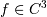 (i.e.,
 has at least 3 continuous
derivatives) and let be 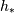 a non homogeneous stepsize, the
spacing the finite difference coefficients are computed by minimising
the consistency error 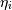:
has at least 3 continuous
derivatives) and let be 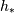 a non homogeneous stepsize, the
spacing the finite difference coefficients are computed by minimising
the consistency error 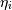: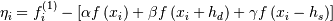
By substituting 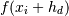 and 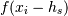 with their Taylor series expansion, this translates into solving the following the linear system:
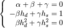
The resulting approximation of 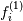 is the following:
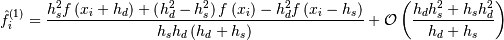
It is worth noting that if 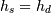 (i.e., data are evenly spaced) we find the standard second order approximation:
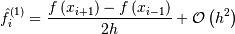
With a similar procedure the forward/backward approximations used for boundaries can be derived.
References
[R21] Quarteroni A., Sacco R., Saleri F. (2007) Numerical Mathematics (Texts in Applied Mathematics). New York: Springer. [R22] Durran D. R. (1999) Numerical Methods for Wave Equations in Geophysical Fluid Dynamics. New York: Springer. [R23] Fornberg B. (1988) Generation of Finite Difference Formulas on Arbitrarily Spaced Grids, Mathematics of Computation 51, no. 184 : 699-706. PDF. Examples
>>> f = np.array([1, 2, 4, 7, 11, 16], dtype=np.float) >>> np.gradient(f) array([ 1. , 1.5, 2.5, 3.5, 4.5, 5. ]) >>> np.gradient(f, 2) array([ 0.5 , 0.75, 1.25, 1.75, 2.25, 2.5 ])
Spacing can be also specified with an array that represents the coordinates of the values F along the dimensions. For instance a uniform spacing:
>>> x = np.arange(f.size) >>> np.gradient(f, x) array([ 1. , 1.5, 2.5, 3.5, 4.5, 5. ])
Or a non uniform one:
>>> x = np.array([0., 1., 1.5, 3.5, 4., 6.], dtype=np.float) >>> np.gradient(f, x) array([ 1. , 3. , 3.5, 6.7, 6.9, 2.5])
For two dimensional arrays, the return will be two arrays ordered by axis. In this example the first array stands for the gradient in rows and the second one in columns direction:
>>> np.gradient(np.array([[1, 2, 6], [3, 4, 5]], dtype=np.float)) [array([[ 2., 2., -1.], [ 2., 2., -1.]]), array([[ 1. , 2.5, 4. ], [ 1. , 1. , 1. ]])]
In this example the spacing is also specified: uniform for axis=0 and non uniform for axis=1
>>> dx = 2. >>> y = [1., 1.5, 3.5] >>> np.gradient(np.array([[1, 2, 6], [3, 4, 5]], dtype=np.float), dx, y) [array([[ 1. , 1. , -0.5], [ 1. , 1. , -0.5]]), array([[ 2. , 2. , 2. ], [ 2. , 1.7, 0.5]])]
It is possible to specify how boundaries are treated using edge_order
>>> x = np.array([0, 1, 2, 3, 4]) >>> f = x**2 >>> np.gradient(f, edge_order=1) array([ 1., 2., 4., 6., 7.]) >>> np.gradient(f, edge_order=2) array([-0., 2., 4., 6., 8.])
The axis keyword can be used to specify a subset of axes of which the gradient is calculated
>>> np.gradient(np.array([[1, 2, 6], [3, 4, 5]], dtype=np.float), axis=0) array([[ 2., 2., -1.], [ 2., 2., -1.]])